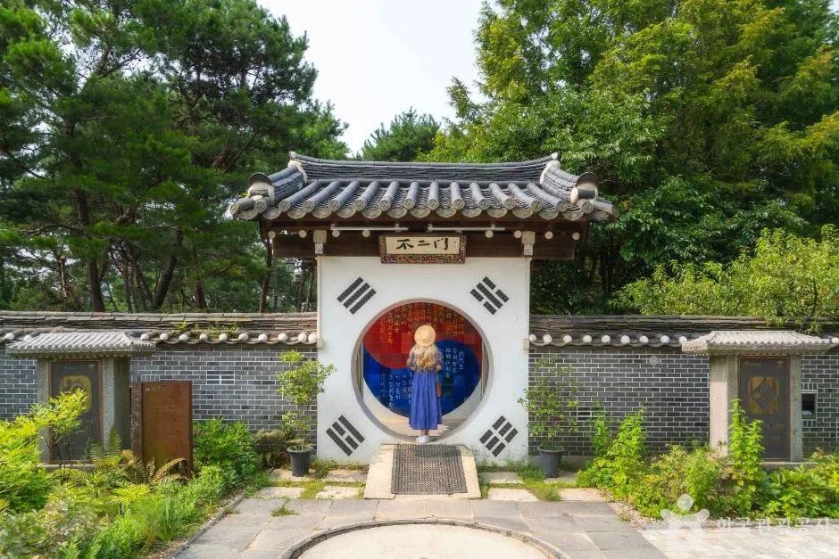
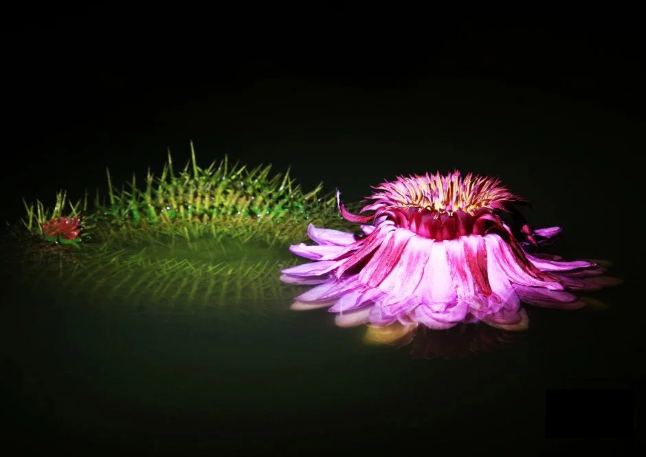
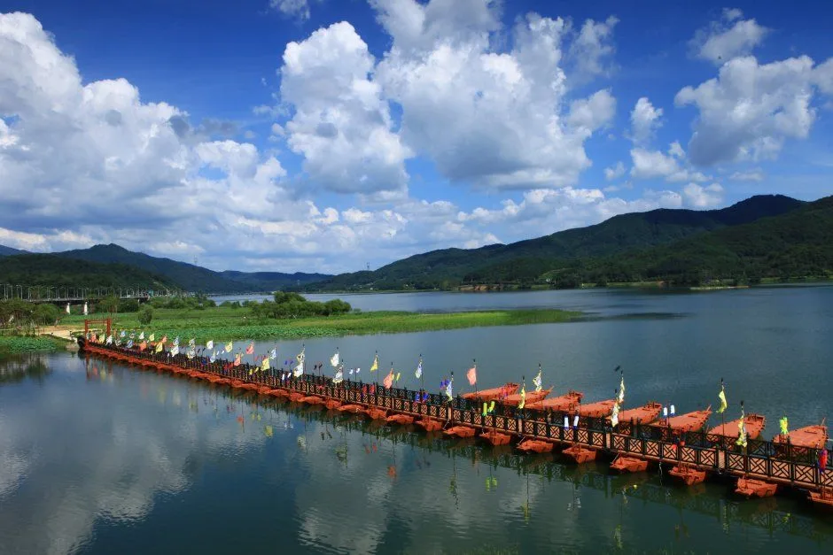
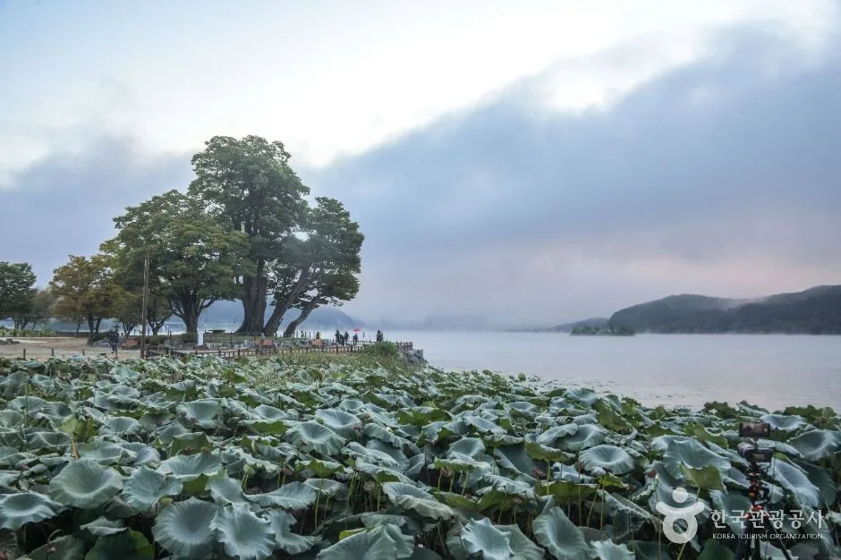
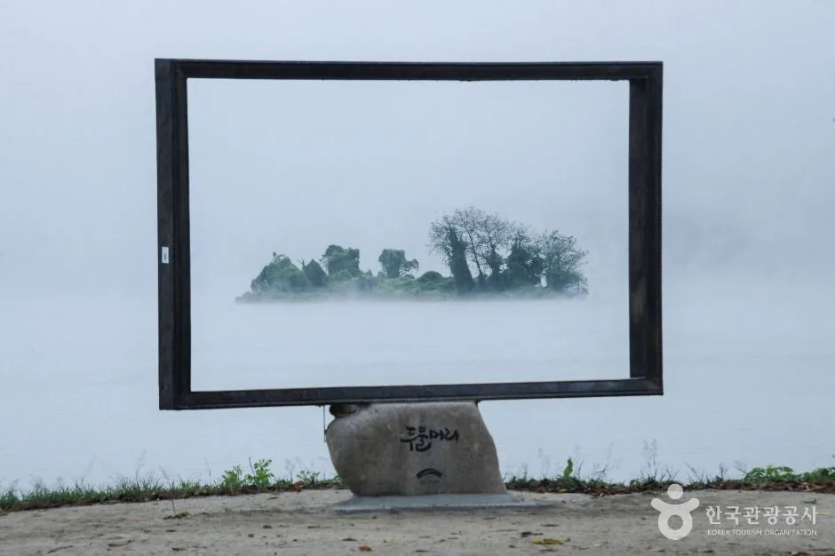
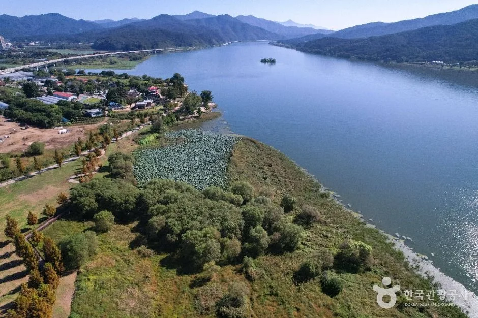
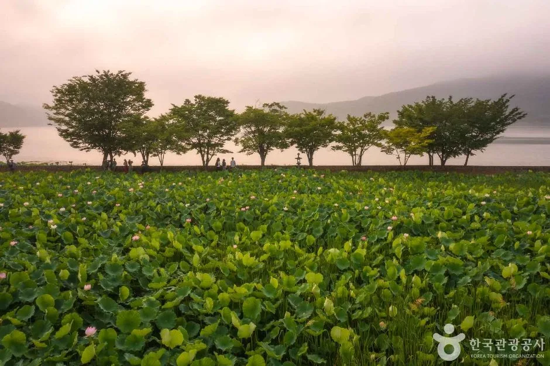
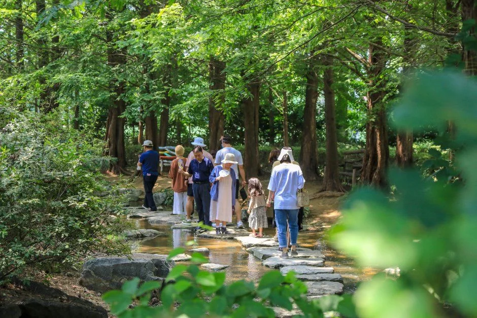

▲ 세미원의 수련 연못. 연꽃이 아닌 수련 연못이며, 한국관광공사가 수련문화제 소개용으로 올린 사진이라 촬영 시기는 확인하지 못했다(10월 현재 모습과 다를 수 있다) 사진=한국관광공사
"연꽃은 6월 하순~8월, 지금은 10월인데 세미원에 가도 될까?" 답부터 말하면 가도 된다. 세미원 공식 안내가 연꽃(백련지·홍련지)의 개화를 6월 말~8월 초로 적어 놓았으니 연꽃은 이미 끝났지만, 열대수련은 7~10월 개화로 안내돼 있고, 세미원이 10월 5일 공식 게시물에서 열대수련정원에 국화·가을 초화류 꽃 조형물을 새로 만들었다고 전했다. 여기에 2026 세미원 수련문화제(9월 1일~10월 31일)가 열리는 중이고, 10월 16~19일에는 같은 무대인 세미원·두물머리 일원에서 제14회 경기정원문화박람회가 열린다. 이 글은 세미원 공식 홈페이지·양평군 공식 페이지·한국관광공사 정보를 바탕으로 운영 정보, 가을에 실제로 볼 수 있는 것, 두물머리·배다리 동선, 주차와 서울 출발 혼잡 요령을 정리했다. 공식 자료로 확인하지 못한 항목은 따로 표시했다.
1. 운영시간·휴무·입장료 — 10월은 무휴, 11월부터 월요일 휴관
세미원은 4~10월 휴관 없이 매일 열고, 11월부터 3월까지는 매주 월요일에 쉰다. 공식 관람안내 기준 개장 시간은 09:00~18:00이고, 입장권은 관람 종료 30분 전(17:30)까지 판다. 월요일이 공휴일이면 다음 날 대체 휴관 예정이라고 적혀 있다. 올해 11월 첫 월요일은 2일이므로, 11월 방문을 계획한다면 월요일을 피하면 된다. 세미원 관람안내 바로가기

▲ 불이문 — 태극기 속 자연 철학을 담았다는 세미원의 상징 문. 매표소 중 하나가 이 문 쪽이다 사진=한국관광공사
| 항목 | 내용 |
|---|---|
| 주소·문의 | 경기도 양평군 양서면 양수로 93 / 031-775-1835 |
| 운영 시간 | 09:00~18:00 (입장 마감 17:30, 입장권은 종료 30분 전까지 발매) |
| 휴관일 | 4~10월 없음 / 11~3월 매주 월요일(월요일 공휴일이면 다음 날 대체 휴관 예정) |
| 일반 요금 | 7,000원 (만 19세 이상, 양평사랑상품권 2,000원 지급) |
| 우대 요금 | 4,000원 (만 6세 이상 어린이·청소년, 65세 이상, 장애 경증 4~6급 / 상품권 1,000원 지급) |
| 단체 | 4,000원 (30인 이상, 중복 할인 불가) |
| 무료 | 만 5세 이하, 양평군민(신분증, 1인 1매), 중증 장애(1~3급) 본인 및 동반 보호자 1인, 국가유공자와 배우자, 현역 사병, 기초생활수급 1종(서류 지참) 등 |
| 반입 금지 | 반려동물(장애인 보조견 제외), 음료를 뺀 모든 음식물, 자전거·킥보드·전동휠·드론·텐트·공·원반 등 다른 관람객에 방해되는 물품, 악기·확성기 등 소음 물품 |
ℹ️ 시설개선공사가 올해 12월까지 이어진다
세미원은 3월 13일자 공지에서 "2026년 3월~12월, 공사 구역은 주차장·진입로 및 녹지대"라고 밝혔다. 공사 장비 운행과 일부 구간 통행 제한이 있을 수 있다는 안내다. 어느 구간이 언제 막히는지는 공지에 적혀 있지 않아 확인하지 못했다. 경인일보는 박람회 사업의 하나로 세미원 진입로·주차장 환경개선이 진행 중이라고 보도했는데, 공지의 공사 구역(주차장·진입로·녹지대)과 같은 공사인지는 공식 자료로 확인하지 못했으므로 연관은 추정이다. 박람회 개막(10월 16일) 전 공사가 끝나는지도 미확인이다. 방문 전 공지사항을 한 번 보고 가는 편이 안전하다.
2. 연꽃은 끝났다, 지금 실제로 볼 수 있는 것 — 열대수련·국화·수련문화제
10월 초 세미원의 주인공은 연꽃이 아니라 수련과 가을 꽃이다. 공식 관람시설 안내에서 백련지·홍련지·페리기념연못의 개화 시기는 6월 말~8월 초로 적혀 있고, 열대수련연못은 7~10월, 빅토리아연못은 7~8월이다. 그래서 6월 말~8월 초에 맞춰 열리는 연꽃문화제 사진을 보고 지금 찾아가면 연꽃은 볼 수 없다. 대신 세미원이 10월 5일 '오늘의 세미원'에 올린 게시물이 지금의 모습을 가장 정확히 보여준다. 이 게시물은 이용 허락 여부를 확인하지 못해 사진은 싣지 않고 글로만 옮긴다. 게시물은 열대수련정원에 주황색 국화·가을 초화류로 꽃 조형물을 새로 만들었고, 국화는 아직 꽃망울을 품은 단계이며 연잎 사이에 분홍 수련이 핀 모습을 담았다. 10월 6일 확인 시점에도 '오늘의 세미원' 최신 글은 이 10월 5일 게시물이었다.
| 볼거리 | 현재 상태 | 근거 |
|---|---|---|
| 열대수련 | 개화 시기 7~10월로 안내. 10월 5일 공식 사진에 분홍 열대수련이 핀 모습 | 공식 관람시설 안내 / 오늘의 세미원 |
| 국화·가을 초화류 꽃 조형물 | 열대수련정원에 새로 조성. 국화는 아직 꽃망울 단계, 활짝 피면 더 풍성해질 것이라고 안내 | 오늘의 세미원(10월 5일 게시) |
| 빅토리아 수련 | 두물머리 연밭에 식재·조성 중. 9월 말 개화 예상이라고 했으나, 실제 개화 여부는 '오늘의 세미원'에서 확인하라고 안내 | 세미원 공지(8월 25일) |
| 연꽃(백련지·홍련지) | 6월 말~8월 초 시기로 지금은 해당 없음 | 공식 관람시설 안내 |
| 수련문화제 기획전 | 연꽃박물관 2층 "연꽃, 삶의 염원을 수놓다"(박물관·미술관 지원사업 기획전시), 3층 지역 예술인 대관전시, 갤러리 세미 라이트패널 사진전. 10월 31일까지 | 수련문화제 공식 안내문 |

▲ 세미원 수련 사진(한국관광공사 수련문화제 소개 자료, 야간 조명 연출). 촬영 시기와 연출 여부는 확인하지 못했으며 이번 시즌 현재 모습이 아니다. 사진=한국관광공사
수련문화제는 9월 1일부터 10월 31일까지 이어진다. 공식 안내문에 따르면 공연은 "줄과 북의 풍류 한마당"(지역문화활성화 장구·통기타 공연)이고, 장구는 매월 1·3째 주 토요일 14:30, 통기타는 2·4째 주 토요일 13:00에 세미원 세족대 옆 고가다리 아래에서 열린다. 이 규칙대로 날짜를 풀면 10월에는 10일(통기타), 17일(장구), 24일(통기타)이 해당한다(날짜 풀이는 이 글의 계산이며, 안내문은 "기관 사정에 따라 변경될 수 있다"고 적었다). 체험은 천연 손수건 염색, 하바라움 무드등 만들기 등이 있고 홈페이지 예약이다. 관람객 이벤트로 연꽃박물관 2층 기획전시 관람 뒤 기념품을 주는 '스탬프 투어'와, 지하철 이용을 SNS에 인증하면 기념품을 주는 '탄소중립, 지하철 이용 캠페인'이 안내돼 있다. 자가용으로 가는 독자라면 캠페인 대상이 아닐 가능성이 높다.
✅ 가기 전 확인
· 국화 만개 시점은 공식 자료에 없다. 10월 5일 기준으로는 꽃망울 단계이니, 국화를 보려면 세미원 '오늘의 세미원' 게시물로 직전 상태를 확인한다
· 연꽃 사진을 기대하고 가면 실망한다. 연잎이 우거진 풍경이 목적이라면 이미 시들기 시작한 시기일 수 있다(상태는 확인하지 못했다)
· 체험은 홈페이지 예약이라 현장 즉석 참여 가능 여부는 확인하지 못했다
3. 두물머리와 배다리 — 세미원과 한 동선으로 묶인다
배다리는 세미원과 두물머리를 잇는 다리다. 세미원 공식 시설 안내가 "배를 여럿 이어 만든 다리로 정조시대의 배다리를 재현하였으며, 세미원과 두물머리를 연결한다"고 설명한다. 공식 추천 관람 코스(불이문 매표소 기준 평균 약 1시간)도 17곳 순서에 배다리→두물머리→배다리를 넣어 두물머리까지 다녀오게 짜 놓았다. 두물머리 자체는 한국관광공사 관광정보에 "상시 개방, 연중무휴, 주차 가능"으로 올라 있다.

▲ 배를 이어 만든 배다리 — 세미원과 두물머리를 연결한다(2026 수련문화제 홍보 사진) 사진=한국관광공사
| 항목 | 확인된 내용 | 출처 |
|---|---|---|
| 위치 | 경기도 양평군 양서면 두물머리길 145. 북한강과 남한강이 합쳐지는 곳 | 한국관광공사 관광정보 |
| 볼거리 | 이른 아침 물안개와 일출, 황포돛배, 400년이 넘은 느티나무 | 한국관광공사 관광정보 |
| 운영 | 상시 개방, 연중무휴, 주차 가능. 문의 양평군 관광과 031-770-1067 | 한국관광공사 관광정보 |
| 황포돛배 | 볼거리로 소개돼 있으나 2026년 운항 여부·요금은 공식 자료에서 확인하지 못했다 | - |
| 연핫도그 등 먹거리 | 신뢰할 공식 자료를 찾지 못해 이 글에서는 다루지 않는다 | - |

▲ 두물머리 강변의 큰 나무 일대. 한국관광공사가 소개하는 두물머리 대표 풍경이다 사진=한국관광공사
두물머리는 한강 제1경(두물경)으로 알려져 있고, 조선시대 이건필의 그림과 겸재 정선의 그림으로도 전해진다고 관광정보가 설명한다. 첫 방문이라면 위의 느티나무 한 그루가 강변 포토 포인트가 된다. 다만 사진 속 나무가 정확히 어떤 나무인지는 관광공사 사진 설명으로 확인하지 못했고, 같은 정보에서 "400년이 넘은 느티나무"를 언급한 정도다. 두물머리에는 물안개를 프레임에 담는 액자 포토존도 있다.

▲ 두물머리 물안개를 담는 액자 모양 포토존 사진=한국관광공사
두물머리의 가을은 서늘한 이른 아침이 가장 좋다고들 하지만, 물안개가 생기는 빈도와 시기는 날씨에 달려 있어 보장할 수 없다.
4. 10월 16~19일 경기정원문화박람회 — 가을 방문의 가장 큰 변수
제14회 경기정원문화박람회가 세미원과 두물머리 일원에서 열린다. 양평군 공식 페이지와 박람회 공식 사이트 모두 기간을 2026년 10월 16일(금)~19일(월) 4일간, 장소를 세미원 및 두물머리 일원, 주최를 경기도·양평군으로 적는다. 박람회 주제는 "두물머리 사:색(思索·四色)"이다. 양평정원 박람회 개요 바로가기
| 항목 | 내용 | 확인 수준 |
|---|---|---|
| 기간·장소 | 10월 16일(금)~19일(월), 세미원·두물머리 일원 | 양평군·박람회 공식 |
| 주요 내용 | 개막식, 전시정원(초청·작가·상상·시민·학생정원 등), 정원문화 체험·산업부스, 문화·예술 공연 | 양평군·박람회 공식 |
| 작품정원 | 작가정원 5개, 상상정원 5개 선정(작가정원 200㎡, 상상정원 60㎡ 규모). 정영선 조경가가 초청작가로 참여한다는 보도 | 언론 보도(7월) |
| 공연 시간 | 버스킹 공연은 11:00~17:00 중 팀별 30분 내외(공연자 모집 공고) | 양평군 공식 공고 |
| 입장료 | "무료·운영 10:30~17:00"로 소개한 관광정보 사이트(Korea Trip Tips 등)가 있으나 공식 개요·공식 사이트·주요 보도에는 요금·운영시간 언급이 없다. 박람회 기간 세미원 입장료 적용 방식은 확인하지 못했다 | 비공식 단일 계열, 미확인 |
| 셔틀·주차 대책 | 박람회 공식 사이트의 셔틀 안내 페이지는 10월 6일 재확인 시점에도 평택시농업생태원 기준 노선(남부·북부·서부 노선, 주말 임시주차장 직통)이 그대로여서 양평 정보는 아직 없다. 세미원 공지사항(4건, 3월 24일 주차 안내가 가장 최근 주차 관련 글)에도 박람회 교통 안내는 없다 | 미공개 |
| 사업비·시설정비 | 경인일보 보도 기준 사업비 19억4천800만 원, 세미원 진입로·주차장 환경개선, 양수역에서 이어지는 '환영의 거리' 조성, 야간 경관조명 설치가 포함됐다. 시민추진단 200명·정원해설사 20명 배치 예정 | 언론 보도(공식 미확인) |
| 문의 | 양평군 정원산림과 031-770-2445(09:00~17:00) | 박람회 공식 |

▲ 두물머리 일대 항공 사진 — 박람회는 세미원과 이 두물머리 일원에서 열린다 사진=한국관광공사
ℹ️ 박람회에 맞춘 두물머리 빅토리아 수련
세미원 공지(8월 25일)는 "경기정원문화박람회를 맞아 두물머리 연발에 빅토리아 수련을 식재·조성하고 있다"고 밝혔다. 박람회에 맞춘 연출이므로 박람회 전후로 두물머리 쪽 풍경이 달라질 수 있다. 현재 모습은 이 글에서 확인하지 못했다.
5. 주차 — 세미원 주차장은 못 쓴다, 두물머리 쪽 요금은 엇갈린다
세미원 방문 차량은 인근 공영주차장을 이용해야 한다. 공식 오시는 길이 "양서문화체육공원 주차장이 공사 중이라 주변 공영주차장(세미원 도보 5분)을 이용해 달라"고 안내하고, 공식 공지 지도에는 무료 공영주차장 3곳과 유료 공영주차장 1곳이 표시돼 있다(요금·면수는 지도에 없다). 세미원도 이곳을 "상시 교통 체증 지역"이라고 쓰며 대중교통을 권한다. 세미원 오시는길 바로가기
| 주차장 | 확인된 내용 | 주의 |
|---|---|---|
| 세미원 자체 주차장(양서문화체육공원) | 공사로 이용 불가(공식, 2026년 3~12월) | 12월까지 이어진다 |
| 세미원 주변 공영주차장 | 도보 약 5분. 지도상 무료 3곳, 유료 1곳 | 요금·면수·운영시간 확인 못 함 |
| 두물머리 교량하부 공영주차장 | 양수리 770-4 일대, 일반 170면, 무료로 소개(모두의주차장 정보) | 해당 정보 갱신일이 2020년이라 현재 상태 미확인 |
| 느티나무 민영주차장 | 두물머리와 가장 가까운 민영 주차장으로 소개. 요금이 하루 2,000원~3,000원으로 매체별로 엇갈린다(2026년 8월 한 여행 매체는 하루 3,000원으로 소개) | 민영이라 변동 가능, 현장 게시 요금 확인. 신양수대교 아래 무료 공영주차장은 느티나무까지 꽤 걸어야 한다는 보도 |
✅ 주차 요령
· 박람회 기간(10월 16~19일)과 한글날 연휴(10월 9~11일)에는 공영주차장이 일찍 찰 가능성이 높다(이 글의 추정이며 공식 수치는 없다)
· 세미원과 두물머리를 함께 걸을 계획이면 한 곳에만 세우면 된다. 배다리로 연결되기 때문이다
· 가능하면 지하철(양수역 도보 700m)이나 버스(2000-1·2000-2는 세미원 앞 하차)로 가고 차는 두고 오는 편이 낫다
6. 자차 코스와 소요시간표 — 세미원 1시간, 두물머리까지 반나절
세미원 공식 추천 코스는 불이문 매표소 기준 평균 약 1시간이다. 연꽃박물관, 국사원과 우리내, 장독대 분수, 페리기념연못, 백련지, 전통놀이한마당, 세심로, 사랑의 연못, 세한정, 배다리, 상춘원, 두물머리, 배다리, 열대수련연못, 유상곡수, 빅토리아연못, 홍련지 순서로 17곳이다. 장독대 분수는 "한강과 나라와 가정의 안녕을 기원하는 분수"로, 사랑의 연못은 모네의 '수련이 가득한 정원'을 재현한 곳으로 공식 안내가 설명한다. 아래 표의 체류 시간은 공식 1시간 안내를 바탕으로 이 글이 나눈 권장 안배이며 공식 수치가 아니다.

▲ 연잎이 가득한 세미원 연못의 안개 낀 풍경. 연꽃철의 모습이라 지금은 이 정도로 우거지지 않았을 수 있다 사진=한국관광공사

▲ 세미원 메타세쿼이아 숲의 돌징검다리 길(한국관광공사 소개 사진, 촬영 시기 미상). 세심로 일대 산책 구간 분위기를 보여 준다고 설명돼 있으나 정확한 위치명은 확인하지 못했다. 사진=한국관광공사
| 단계 | 장소 | 권장 체류 | 메모 |
|---|---|---|---|
| 1 | 공영주차장에서 세미원 매표소 | 도보 약 5분 | 공식 안내 기준 도보 5분 거리 |
| 2 | 연꽃박물관·수련문화제 기획전시 | 20~30분 | 2층 기획전, 3층 대관전 |
| 3 | 장독대 분수~세심로~세한정 | 30~40분 | 공식 코스 순서대로 |
| 4 | 배다리 건너 두물머리 | 40~60분 | 강변 산책·포토존 |
| 5 | 열대수련정원·국화 조형물 | 20~30분 | 10월 가을 포인트 |
| 합계 | - | 약 2시간 30분~3시간 30분 | 식사 시간 제외, 이 글의 안배 |
세미원은 17:30에 입장을 마감하므로 마지막 입장 시각만 지키면 된다. 10월 일몰 시각은 이 글에서 확인하지 못했다.
7. 서울 출발 혼잡 팁 — 연휴·박람회를 피하는 선택표
공식 안내가 "상시 교통 체증 지역"이라고 쓸 만큼 이 일대는 막힌다. 다만 실제 정체 시간대나 소요 시간을 보여주는 공식 통계는 찾지 못했고, 아래 표는 날짜별 변수를 근거로 한 이 글의 판단이다. 서울 출발 소요 시간도 공식 수치를 확인하지 못해 적지 않았다.
| 날짜 | 변수 | 권장 |
|---|---|---|
| 10월 7~8일(수·목) | 평일, 알려진 특별 변수 없음 | 상대적으로 한산할 가능성 |
| 10월 9~11일(금~일) | 한글날 연휴. 세미원은 휴관 없이 운영 | 이른 아침 도착, 대중교통 우선 |
| 10월 12~15일(월~목) | 평일. 박람회 직전 설치 기간 | 설치 작업으로 일부 구간 통행 제한 가능성(미확인) |
| 10월 16~19일(금~월) | 제14회 경기정원문화박람회 | 자차보다 대중교통, 공식 셔틀·주차 안내가 나오면 재확인 |
| 10월 20일 이후 | 박람회 종료 후 평일 | 국화 만개를 노린다면 후보일(만개 시점은 미확인) |
ℹ️ 대중교통 노선은 공식에 나와 있다
세미원 공식 안내는 지하철 경의중앙선 양수역에서 도보 700m, 청량리발 167번(양수대교입구 하차, 도보 500m), 강변역발 2000-1과 잠실역발 2000-2(세미원 앞 하차, 도보 100m), 광역버스 G9311(양수파출소 하차, 도보 600m)을 안내한다. 버스 시간표는 양평터미널 031-772-2341로 문의하라고 한다. 노선·번호는 바뀔 수 있으니 출발 전 확인한다.
8. 확인하지 못한 것 — 가기 전에 직접 물어볼 것
| 항목 | 상태 |
|---|---|
| 국화 만개 시점 | 공식은 "꽃망울 단계, 피어날 준비"까지만 밝힘 |
| 빅토리아 수련 현재 개화 | 9월 말 개화 예상이라 했으나 현재 상태 미확인 |
| 황포돛배 운항·요금, 연핫도그 | 공식·신뢰 자료 없음 |
| 세미원 입장권 당일 재입장 가능 여부 | 배다리로 두물머리를 다녀오는 코스가 공식 추천 코스에 있으나 재입장 규정은 확인하지 못함 |
| 주변 공영주차장 요금·면수, 두물머리 민영주차장 현재 요금 | 공식 수치 없음, 매체별로 상이 |
| 박람회 기간 세미원 입장료·셔틀·주차 통제 | 공식 공개 전 |
✅ 출발 전 3가지
· 세미원 031-775-1835로 당일 입장·재입장·주변 주차 상황을 먼저 묻는다
· '오늘의 세미원' 게시판에서 국화와 수련 현재 상태 사진을 확인한다
· 박람회 기간이라면 양평군 정원산림과 031-770-2445에 셔틀·주차 계획을 확인한다
9. 요약
세미원은 4~10월 휴관 없이 09:00~18:00(입장 마감 17:30) 운영하고, 입장료는 일반 7,000원·우대 4,000원이다. 연꽃 시즌은 끝났지만 열대수련(7~10월)과 열대수련정원의 국화·가을 초화 꽃 조형물, 수련문화제(10월 31일까지) 전시·공연을 볼 수 있다. 국화는 10월 5일 기준 아직 꽃망울 단계다.
세미원 자체 주차장은 공사로 쓸 수 없고 인근 공영주차장(도보 5분)을 써야 하며, 공식은 대중교통을 권한다. 배다리를 건너면 두물머리까지 한 동선으로 묶인다. 10월 9~11일 연휴와 10월 16~19일 경기정원문화박람회가 혼잡의 변수이고, 박람회의 셔틀·주차 대책과 입장료 적용은 아직 공개되지 않았다. 황포돛배 요금, 연핫도그, 주변 주차장 요금은 확인하지 못했다.